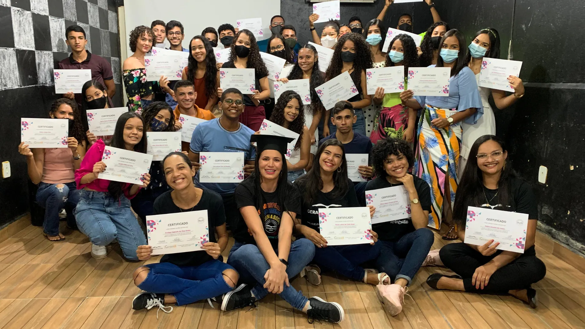
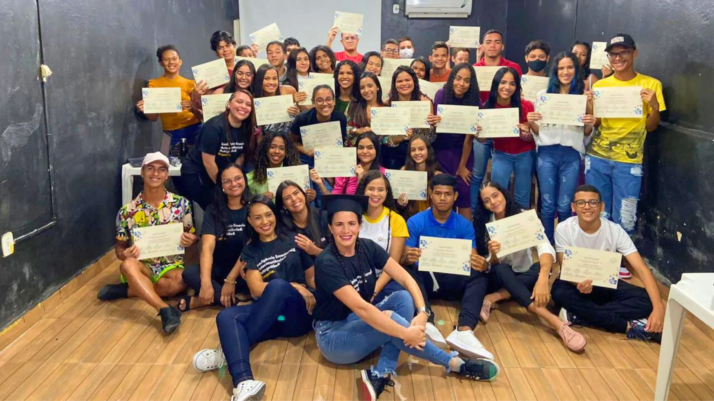
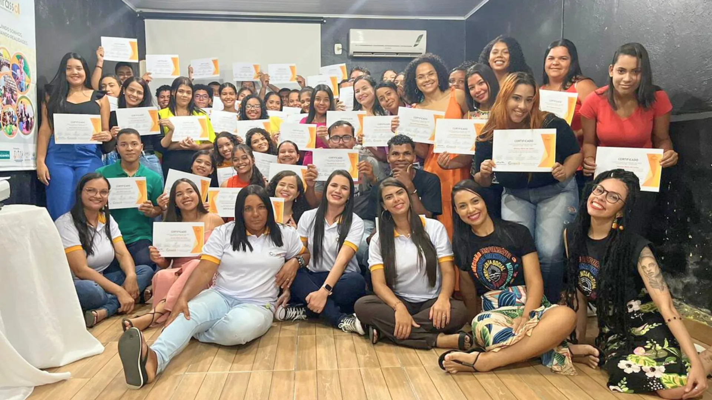
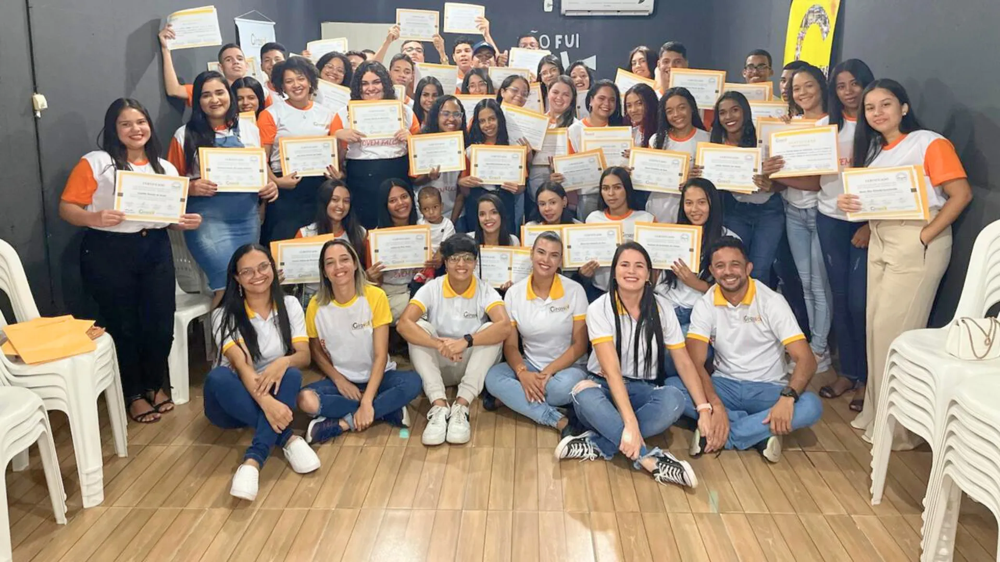
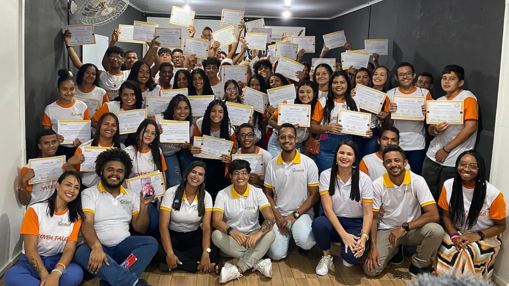
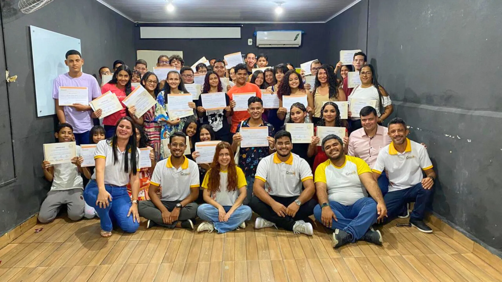
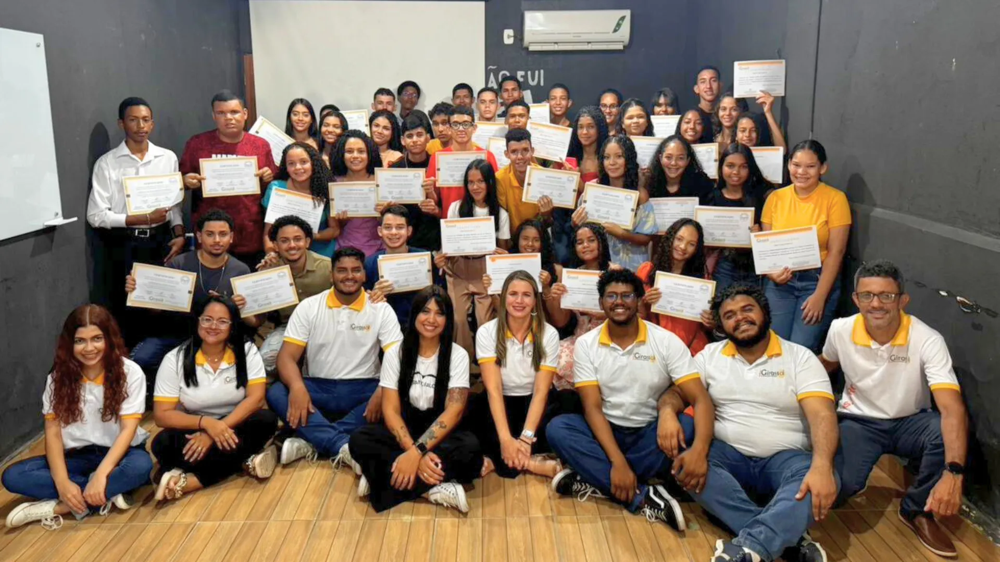
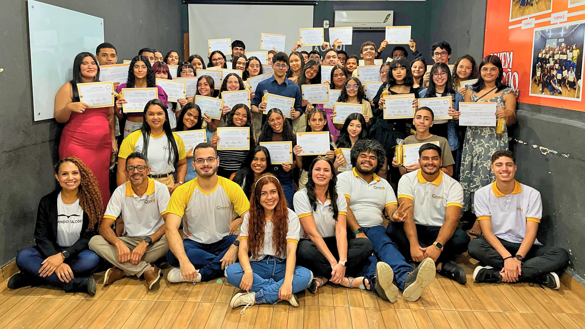

Uma parceria do Instituto Girassol de Desenvolvimento Social e da Gerando Falcões para promover a educação e o protagonismo juvenil em Boca da Mata/AL
O Projeto Jovem Falcão é uma iniciativa realizada em parceria entre o Instituto Girassol de Desenvolvimento Social, uma organização com 17 anos de atuação na promoção do protagonismo juvenil e no desenvolvimento local, por meio da educação não formal e complementar, e a Gerando Falcões, rede que conecta organizações sociais em periferias e favelas com o objetivo de acelerar o desenvolvimento social.
O projeto conta com o apoio da Telefônica, empresa referência em telecomunicações e tecnologia, por meio do Conselho Municipal dos Direitos da Criança e do Adolescente (CMDCA) de Boca da Mata/AL.
O Projeto Jovem Falcão surgiu a partir da necessidade de fortalecer a juventude de Boca da Mata, município do interior de Alagoas com cerca de 27 mil habitantes. Seu objetivo geral é contribuir para a promoção e garantia dos direitos de adolescentes e jovens, além de fomentar o desenvolvimento do potencial humano e social na região.
O projeto tem como objetivos específicos:
- Estimular o desenvolvimento de habilidades técnicas por meio da qualificação profissional em áreas como tecnologia, comunicação e empreendedorismo.
- Incentivar o desenvolvimento e o fortalecimento de habilidades emocionais.
- Promover a qualificação dos educadores por meio de capacitações voltadas para metodologias ativas.
O Projeto Jovem Falcão tem duração de seis meses e pretende atender cerca de 100 adolescentes e jovens, com idades entre 14 e 24 anos, residentes no município. A iniciativa contempla atividades presenciais na sede da organização, atividades a distância por meio da plataforma Canvas e mentorias com profissionais bem-sucedidos de grandes empresas de todo o Brasil.
O projeto também promove o acompanhamento das famílias dos participantes e articulação com os atores da rede de garantia de direitos. Trata-se de uma ação que fortalece a educação como um direito fundamental e como instrumento de transformação social.
Conheça o Projeto Jovem Falcão por meio das fotos dos cursos, oficinas e mentorias.
Turmas do Projeto Jovem Falcão ao longo do tempo

Turma 1

Turma 2

Turma 3

Turma 4

Turma 5

Turma 6

Turma 7

Turma 8